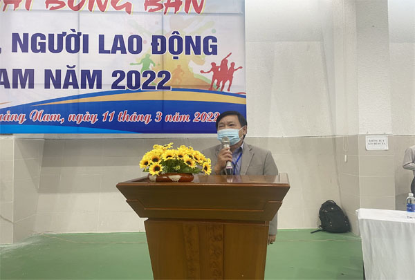
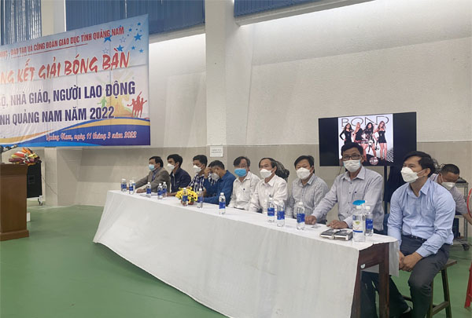
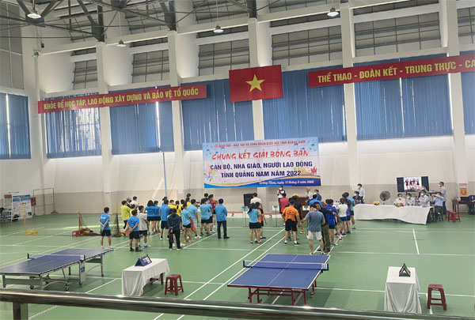
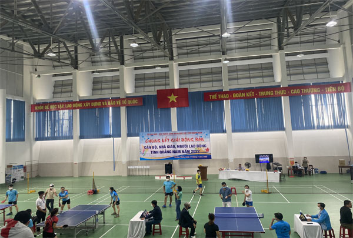
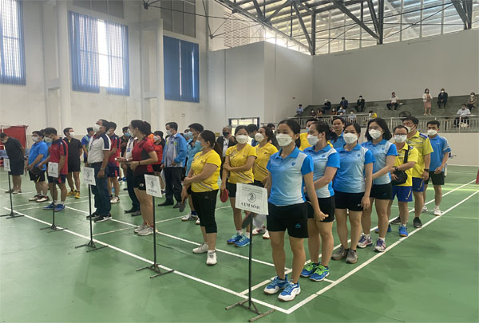
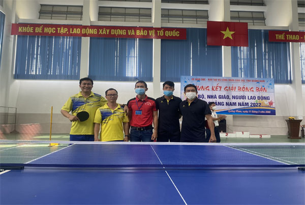
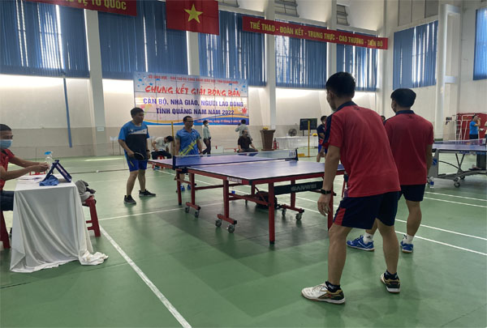
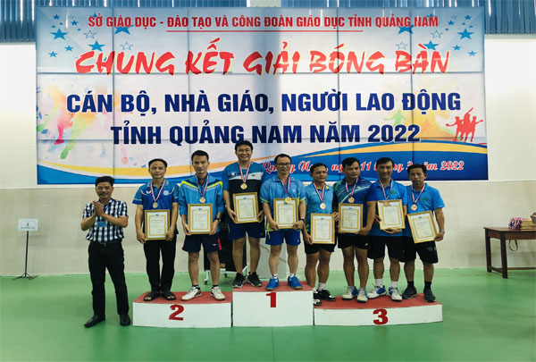

CHUNG KẾT GIẢI BÓNG BÀN CÁN BỘ, VIÊN CHỨC, NGƯỜI LAO ĐỘNG TỈNH QUẢNG NAM NĂM 2022

Lần cập nhật cuối lúc Thứ bảy, 12 Tháng 3 2022 09:09 Viết bởi Administrator Thứ bảy, 12 Tháng 3 2022 08:31
CHUNG KẾT GIẢI BÓNG BÀN CÁN BỘ, VIÊN CHỨC, NGƯỜI LAO ĐỘNG TỈNH QUẢNG NAM NĂM 2022

Ngày 11/3/2022 tại nhà Đa chức năng, trường THPT Chuyên Nguyễn Bỉnh Khiêm, số 02 Trần Đại Nghĩa, Phường Tân Thạnh, TP. Tam Kỳ, tỉnh Quảng Nam đã diễn ra các trận đấu chung kết giải Bóng bàn Cán bộ, viên chức, người lao động tỉnh Quảng Nam năm 2022 giữa 6 cụm sau vòng loại.
Đến tham dự và chỉ đạo tại Hội thi có sự hiện diện của Thầy giáo Nguyễn Công Thành - Phó giám đốc Sở GD&ĐT tỉnh Quảng Nam, các đồng chí Lãnh đạo các Sở Ban ngành, các thầy giáo là Hiệu trưởng, Phó hiệu trưởng các các trường THPT trên địa bàn tỉnh, và hơn 50 tay vượt xuất sắc đã giành được các thứ hạng cao tại các vòng thị ở Cụm.
Buổi thi Chung kết diễn ra hết sức sôi nổi và quyết tâm cao, các đại diện của mỗi Cụm đã thể hiện được tinh thần thể thao chuyên nghiệp góp phần vào thành công chung của giải năm nay.
Những hình ảnh của buổi thi đấu Chung kết:

(Đại biểu khách mời)
(Thầy giáo Nguyễn Công Thành - PGĐ Sở GD&ĐT Quảng Nam)

(Quang cảnh buổi thi đấu Chung kết)

------------------

(Vận động viên tranh tài)

----------------------

----------------

----------&*&----------
Ảnh: Lê Tấn Hùng
Biên tập: Lê Tấn Hùng
- 18/07/2022 16:05 - Triệu tập Giáo viên Tham gia khảo sát về trường TH…
- 30/04/2022 16:08 - NỘI DUNG KIỂM TRA CÁC MÔN THI (SỞ RA ĐỀ) KỲ THI KI…
- 29/04/2022 09:18 - BAN ĐẠI DIỆN CMHS TRƯỜNG THPT CHUYÊN NGUYỄN BỈNH K…
- 21/04/2022 19:37 - KẾ HOẠCH ÔN TẬP VÀ KIỂM TRA CUỐI HỌC KỲ 2, NĂM HỌC…
- 21/04/2022 07:03 - DANH SÁCH NHỮNG MẠNH THƯỜNG QUÂN, CÁN BỘ, GIÁO VIÊ…
- 28/01/2022 08:28 - Kế hoạch xuất bản Tập san kỷ niệm 20 năm ngày thàn…
- 26/11/2021 12:26 - Thông báo phúc khảo kết quả điểm bài thi - Kỳ thi …
- 26/11/2021 08:00 - Công bố điểm thi Kỳ thi chọn đội tuyển dự thi chọn…
- 04/09/2021 14:58 - Thư Chủ tịch nước gửi ngành Giáo dục nhân dịp khai…
- 26/07/2021 07:57 - Nghị quyết 26 Quy định một số chính sách khuyến kh…